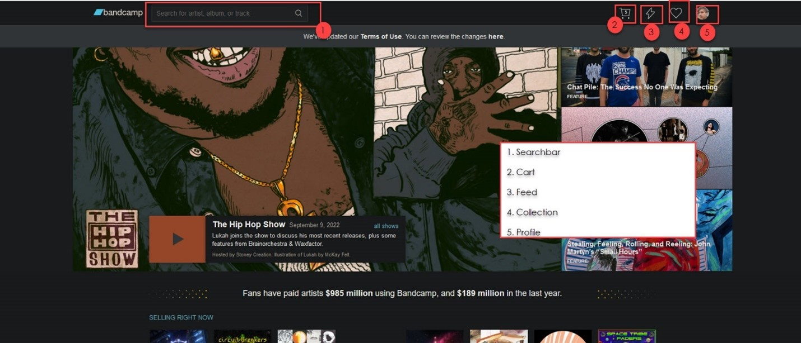
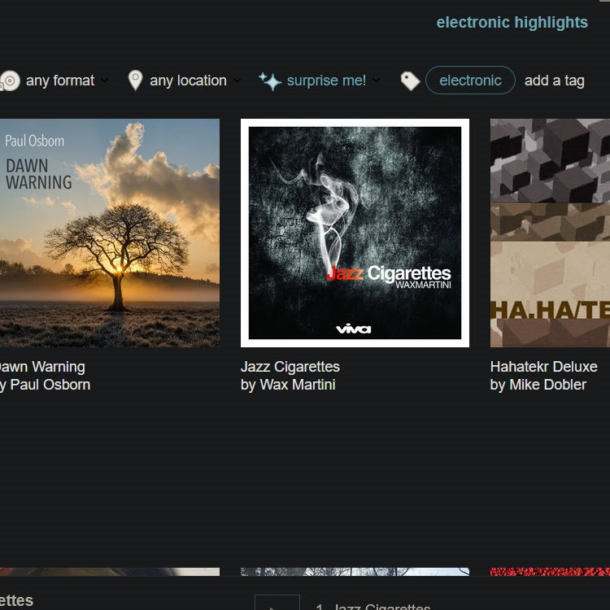

Music Information Retrieval in Bandcamp.com
Introduction
Bandcamp (https://bandcamp.com/) describes itself as "an online record store and music community where passionate fans discover, connect with, and directly support the artists they love." The company claims that 82% of all revenue goes to the artists (About Band camp, n.d.). The music service can be directly contrasted with Spotify. The two organizations, however, differ vastly in their information policies. Bandcamp operates on a traditional retail model and collects no information about the users, whereas Spotify operates using a streaming, advertising-based model (Krukowski, 2020). Also, Bandcamp allows you to save your music directly to your hard drive in any of the major audio file formats—a boon to the discerning audiophile. This paper seeks to accomplish the following goals. First, we provide technical documentation on how to use the Bandcamp retrieval tool. Then, we critique the tool from an Organization of Information (IO) lens. Finally, we provide a set of recommendations to digital information organizations to model the success of Bandcamp.
Description
The landing page for Bandcamp contains many options, but the primary navigation elements can be found on the top bar of the page. To search for music, the user selects the search bar. A list of genre tags is displayed. The user can then either select a genre or enter a manual search query. See Figure 1 for more information.
Figure 1
If the user selects a genre tag, a page dedicated to that genre is loaded. The page displays a curated selection of the music that has been tagged with that genre. From the top of the page, the user can select several options to navigate the search results. See Table 2 for a description of the elements of the retrieval tool.
Table 1
| Element | Description |
|---|---|
| Play Button | Alternately plays or pauses a playlist based on the contents of the Highlights card. |
| Follow Button | After you select this button, music from this genre tag populates the user’s feed. |
| Highlights Card | This card displays a curated list of musical items that Bandcamp considers high quality. |
| All Releases Card |
This card displays a noncurated list of musical items with the following filter options:
|
As can be seen in Figure 2, the musical items are displayed in a list along with their album art and several options. The user can select the album art to play that musical item. The user can also select the following options below the album art:
- The album title and artist name:
- This action loads the album’s page.
- Buy Now:
- This action loads the album’s page with the purchase dialog box automatically displayed.
- Wishlist:
- This action populates the user’s Wishlist with that item.
Figure 2
Note. The Wishlist and Buy Now elements are only displayed when the user positions the pointer near an album.
Analysis
As can be seen above, the Bandcamp music information retrieval (MIR) system relies on metadata tags for music discovery. This system is based on an Information-as-Thing concept, where the digital music files are treated as objects in the same way as a record or t-shirt. This front-end system aligns with the user sentiments collected in the information science literature.
Information-as-Thing
It has been argued that information is an object that can be empirically observed. That is, what people call "data" is not immaterial, but made up of "physical bits and bytes" stored in a computer (Buckland 1991). Even though the magnetic engravings on the disks of hard drives are microscopic to the human eye, they are as physical as the writing printed in books on a shelf. However, others often contrast digital objects with "physical things like books" (Glushko, 2016, p.27). Bandcamp follows a distinct information-as-thing model. The digital music files on the website are marketed and sold in the same manner as the macroscopic merchandise. In this way, the users of this site maintain a sense of ownership that users of subscription-based models waive (Lee et al, 2016).
User Convenience
In an empirical quantitative analysis, it was found that user interest in digital music files increased 15.4% in the period between 2004 and 2012. Meanwhile, interest in tangible recordings decreased by 10.8%. However, one aspect of music information seeking that remained constant was that the most sought-after information was podcasts and feature articles (Lee et al, 2016). Bandcamp addresses this user need well. See Figure 1 and note that the Bandcamp search function is underemphasized. The site gives the most space to the podcasts and articles that the company produces. Bandcamp recommendations are made by people, not back-end algorithms. In a qualitative analysis, users reported that MIR algorithms are off-putting (Lee & Price, 2016).
Recommendations
Information organizations would do well to note the success of Bandcamp. It has proven a sustainable and successful model of a commercial music information retrieval system. Moreover, it has done so ethically, fairly compensating the artists and collecting minimal information from its users. I advocate that digital information organizations adhere to the following guidelines when designing information systems:
- Do not rely on back-end automation to deliver user satisfaction
- Emphasize front-end, human-centered systems actively maintained by content managers
- Do not sell user information to advertisers. Seek alternative funding sources.
Note that these guidelines require no self-sacrifice on the part of the organization. Bandcamp is modestly profitable and growing, whereas Spotify has never reported a profit and is only valuable speculatively (Krukowski, 2020). This speculation no longer has an empirical basis.
Conclusion
In this paper, we have analyzed the Bandcamp MIR system against findings from the information science literature. We have found that the system aligns with sentiments revealed in qualitative and quantitative analyses of user experience outcomes. To effectively recommend information to users, the author calls for information organizations to emphasize front-end content management by subject matter experts over back-end data wrangling.
References
- Buckland, M. K. (1991). Information as thing. Journal of the American Society for Information Science, 42(5), 361–360.
- Glushko, R. J. (2016). "Foundations for organizing systems". The Discipline of Organizing (pp. 25–62). MIT Press.
- Krukowski, D. (2020, August 19). A tale of two ecosystems: On Bandcamp, Spotify and the wide-open future. NPR. https://www.npr.org/2020/08/19/903547253/a-tale-of-two-ecosystems-on-bandcamp-spotify-and-the-wide-open-future
- Lee, J. H., Cho, H., & Kim, Y.-S. (2016). Users’ music information needs and behaviors: Design implications for music information retrieval systems. Journal of the Association for Information Science and Technology, 67(6), 1301–1330. https://doi.org/10.1002/asi.23471
- Lee, J. H., & Price, R. (2016). User experience with commercial music services: An empirical exploration. Journal of the Association for Information Science and Technology, 67(4), 800–811. https://doi.org/10.1002/asi.23433